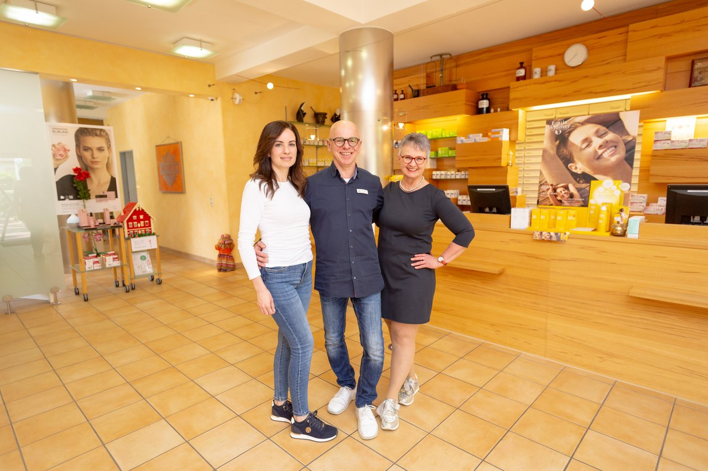
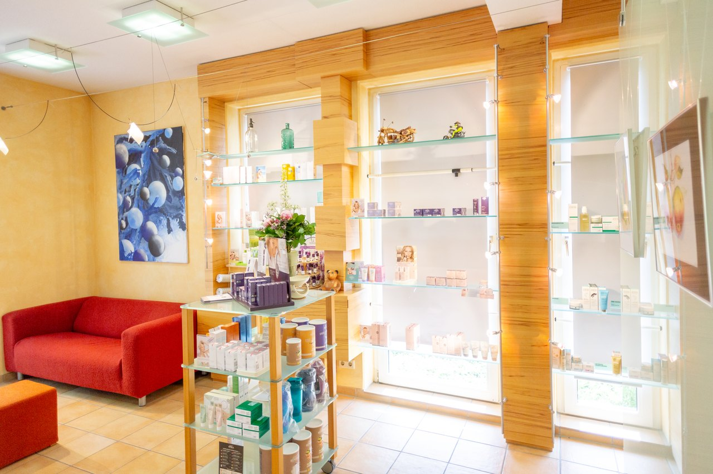
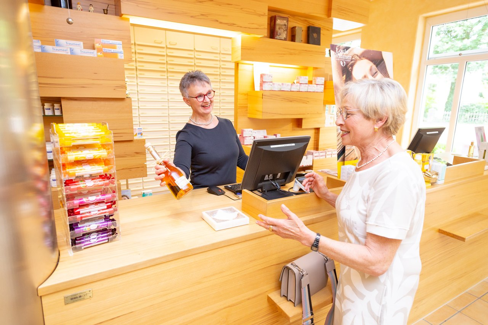

MIKRONÄHRSTOFFE
Eine gute Auswahl.
Eine persönliche Beratung.
Flores führt Nomosan, Pure Encapsulations und OMNi-BiOTiC. Welches Produkt zu deinem Alltag passt, besprechen wir gemeinsam.
Zum Online-Sortiment →DEINE APOTHEKE IN HUDE
Seit 1992 gehört Flores zu Hude. Hier ist Zeit für deine Fragen, ein persönliches Gespräch und die Auswahl, die zu deinem Alltag passt. Schön, dass du da bist.
Parkstraße 47 · Mitten in Hude

01 Persönliche Beratung
02 Vor Ort in Hude
03 In Ruhe online auswählen
BEWUSST AUSGEWÄHLT. PERSÖNLICH ERKLÄRT.
Dein Anliegen steht im Mittelpunkt.
Die passende Auswahl finden wir gemeinsam.
MIKRONÄHRSTOFFE
Flores führt Nomosan, Pure Encapsulations und OMNi-BiOTiC. Welches Produkt zu deinem Alltag passt, besprechen wir gemeinsam.
Zum Online-Sortiment →
HAUT & PFLEGE
Louis Widmer und Annemarie Börlind gehören zur genannten Pflegeauswahl. Lass dich vor Ort zu deiner Pflegeroutine beraten.
Pflegeberatung anfragen →Die Markenübersicht zeigt die auf der Flores-Website genannte Auswahl. Der Online-Shop ist ein Entwurf; weitere Artikel und die Verfügbarkeit werden mit der Apotheke ergänzt.

EIN STÜCK FLORES
Eine kleine Besonderheit abseits des Apothekenalltags: der hauseigene Schnaps. Das Originalfoto auf der Flores-Website gibt bereits einen Einblick.
Name, Flaschengröße, Alkoholgehalt und Preis sind noch mit der Apotheke abzustimmen. Daher hier als Vorschau ohne Bestellfunktion.
Vor Ort nachfragen ↗Spirituose · nur für Erwachsene · keine gesundheitsbezogene EmpfehlungMENSCHEN, DIE FÜR DICH DA SIND
Ob zum ersten Mal oder schon lange vertraut:
Wir freuen uns auf das Gespräch mit dir.
APOTHEKER & INHABER
Gründete Flores im März 1992. Neben der Pharmazie begeistern ihn Musik, Sport und Motorradtouren.
PTA
Namensgeberin der Apotheke und kreative Persönlichkeit. Kunst, Tanzen und Bewegung gehören zu ihrem Alltag.
PTA
Seit 2011 Teil des Teams. Auf der Flores-Website wird sie auch als Ansprechpartnerin für den Bereich Cannabis vorgestellt.
APOTHEKERIN
Seit 2024 bei Flores. Sie bringt ein Pharmaziestudium aus Kairo und internationale Erfahrung mit.
Teamprofile und Fotos nach der offiziellen Flores-Website. Die Bildunterschrift bei Nahla ist dort widersprüchlich; die Zuordnung folgt ihrem Profil und sollte vor Veröffentlichung bestätigt werden.
TYPISCH AXEL & UTA
Die beiden teilen die Liebe zu ihren Motorrädern – und freuen sich auch in der Apotheke über andere Zweiradfans.
ONLINE BESTELLEN · DEMO-SHOP
Ein Einblick in unser digitales Sortiment.
Mit Packungsgrößen und klaren Preisangaben.
Du bist unsicher? Wir beraten dich: 04408 6363
Derzeit zeigen wir Nomosan-Produkte aus dem Herstellerkatalog (22.10.2026). Hersteller-Endpreise inkl. MwSt.; keine bestätigten Flores-Preise oder Bestände. Demo ohne Zahlung oder Versand. Abbildungen können abweichen.
VERBUNDEN MIT HUDE. VERBUNDEN MIT DIR.
Hinter jeder Frage steht ein Mensch. Deshalb beginnt Beratung bei Flores mit einem Gespräch: Was beschäftigt dich? Was brauchst du im Alltag? Gemeinsam schauen wir genauer hin.
Hier findest du uns →DIGITAL ENTDECKEN. PERSÖNLICH SPRECHEN.
Ob ein Produkt aus dem Sortiment oder eine Frage zu deiner Pflege: Das Flores-Team nimmt sich Zeit für das persönliche Gespräch. Ruf an oder komm in der Parkstraße vorbei.
04408 6363 ↗DEIN WEG ZU UNS
Parkstraße 47 · 27798 Hude
Persönlich erreichbar unter 04408 6363
Parkstraße 47 · 27798 Hude
Erst beim Laden verbindet sich dein Browser mit OpenStreetMap.